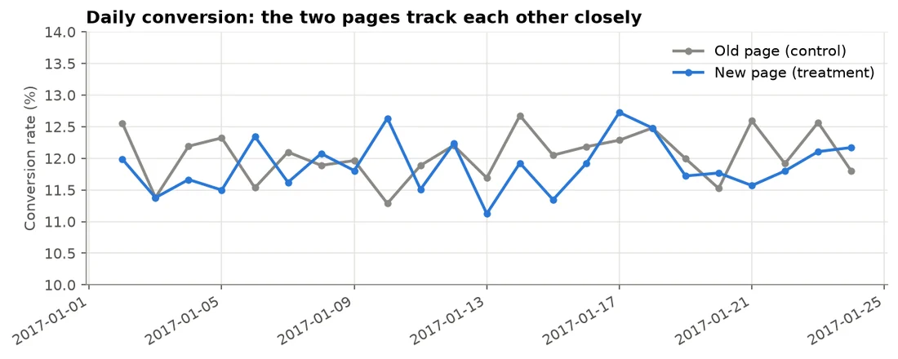
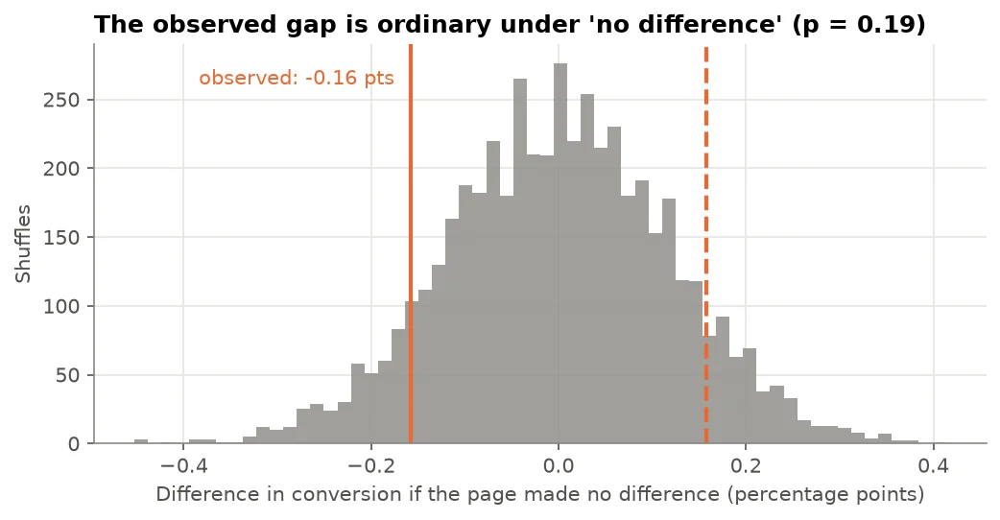

Experimentation · Case study
A/B Test: Should the Online Store Roll Out the New Landing Page?
A pre-registered A/B test on 290,584 visitors that gives marketing a clear, well-powered answer: do not roll out the new landing page.
- −0.16points conversion change (p = 0.19)
- 98%power to detect the lift that matters
- Norollout: the 95% CI sits below +0.5 points
- Data
- Udacity A/B test dataset: 294,478 page views over three weeks, with visitor country
- Methods
- Pre-registration, two-proportion z-test, confidence interval, permutation test, power analysis
- Tools
- Python, pandas, SciPy, statsmodels
The problem
The imagined client is a South African online store. Marketing built a new landing page and believes it converts better. For three weeks, visitors were randomly shown the old page or the new one.
Question: is the difference real or noise, and should the store roll out the new page, keep the old one, or keep testing?
Decided before looking at the data
- Metric: conversion rate per unique visitor; two-sided test at α = 0.05.
- Smallest lift worth acting on: +0.5 percentage points, since a redesign has real costs.
- Decision rule: roll out only if the 95% confidence interval is above 0 and reaches +0.5; do not roll out if it sits entirely below +0.5; otherwise keep testing.
Fixing these first prevents p-hacking: choosing the test or the success criterion after seeing the result.
Cleaning and checks
- Removed 3,893 rows (1.3%) where the assigned group and the page shown disagree, a routing bug, and one duplicate visitor.
- Randomisation check: 145,274 control and 145,310 treatment visitors (sample ratio p = 0.95), with the same country mix in both groups.

Results
| Page | Visitors | Purchases | Conversion |
|---|---|---|---|
| Old (control) | 145,274 | 17,489 | 12.04% |
| New (treatment) | 145,310 | 17,264 | 11.88% |
| Difference | −0.16 points |
- Two-proportion z-test: z = −1.31, p = 0.19; 95% confidence interval −0.39 to +0.08 points.
- A permutation test (5,000 shuffles) and a logistic regression with country give the same answer.
- Big enough to be decisive: the test needed about 68,000 visitors per group for 80% power and had about 145,000, giving 98% power for a +0.5 point lift.


Recommendation
- Do not roll out. Running longer would only narrow an interval that already excludes a worthwhile gain.
- Fix the routing bug that sent 1.3% of visitors to the wrong page, and add an automatic sample ratio mismatch alert.
- Take a bolder design into the next test, with a power calculation done first.
Limitations
- Three weeks cannot show long-run effects, such as returning customers adapting to a new design.
- One pre-registered metric; other metrics would need their own pre-registered test.
- Not South African data: rand estimates rest on stated assumptions (R450 per order, 415,000 visitors a month).
Interested in this work?
I'm looking for data scientist and data analyst roles in South Africa or remote.